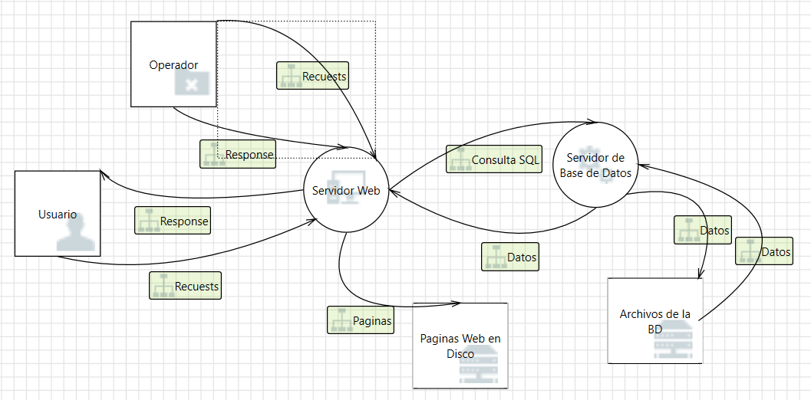
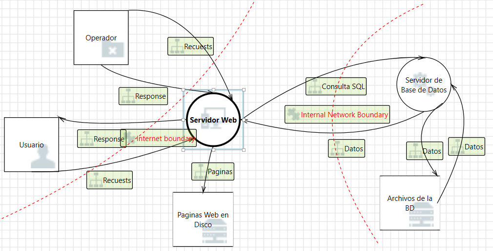
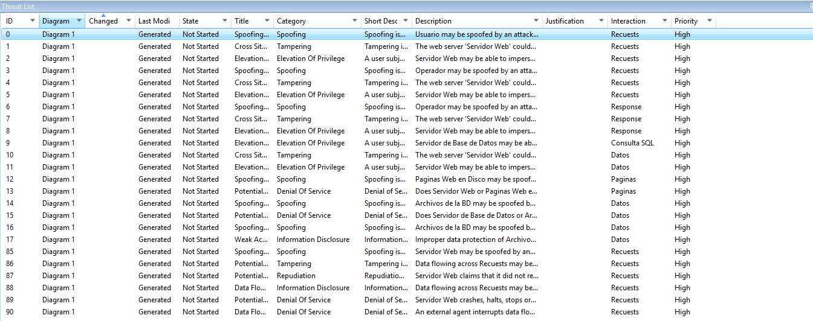

El modelado de amenazas es una disciplina formal dentro de la ingeniería de seguridad cuyo propósito es identificar, analizar y mitigar amenazas potenciales que pueden afectar a un sistema de información antes de su implementación. Forma parte integral de las prácticas de desarrollo seguro y se enmarca dentro del paradigma de Security by Design, que establece que la seguridad debe integrarse desde las primeras fases del diseño arquitectónico y no añadirse como un mecanismo reactivo posterior.
En el contexto del Ciclo de Vida del Desarrollo de Software (SDLC), el modelado de amenazas se sitúa principalmente en la fase de análisis de requisitos y diseño. En esta etapa se identifican activos críticos, flujos de información, puntos de confianza, fronteras de seguridad y posibles superficies de ataque. Al realizar este análisis de manera temprana, se reduce el costo de mitigación de vulnerabilidades, ya que corregir fallos de seguridad en fases posteriores implica mayor complejidad técnica y mayor impacto económico.
Desde una perspectiva metodológica, el modelado de amenazas se apoya en representaciones estructuradas como los Diagramas de Flujo de Datos (DFD), los cuales permiten visualizar:
La identificación de amenazas se realiza analizando cada uno de estos elementos y evaluando cómo podrían ser explotados por un actor malicioso. El análisis no se limita únicamente a vulnerabilidades técnicas, sino que también contempla riesgos organizativos, humanos y operacionales.
En aplicaciones web modernas —especialmente aquellas que gestionan transacciones electrónicas— el modelado de amenazas adquiere una relevancia estratégica. Sistemas de comercio electrónico manejan información sensible como credenciales de acceso, datos financieros, información personal identificable (PII) y registros de transacciones. Un fallo de seguridad en este contexto puede derivar en:
Por tanto, el modelado de amenazas no solo cumple una función técnica, sino también una función de gestión del riesgo empresarial. Permite priorizar inversiones en seguridad, justificar controles de mitigación y garantizar el cumplimiento de normativas vigentes.
Finalmente, es importante destacar que el modelado de amenazas es un proceso iterativo. A medida que evoluciona la arquitectura del sistema o cambian los requisitos funcionales, el análisis debe actualizarse para reflejar nuevas superficies de ataque o modificaciones en el entorno operativo. De esta manera, el modelo de amenazas se convierte en un artefacto vivo dentro de la documentación de seguridad del sistema.
Existen diversas metodologías consolidadas que permiten estructurar el proceso de identificación y evaluación de amenazas. Cada una presenta un enfoque particular orientado a diferentes necesidades organizativas y técnicas.
STRIDE es una metodología desarrollada por Microsoft dentro de su Security Development Lifecycle (SDL), cuyo objetivo es clasificar de manera sistemática las amenazas que pueden afectar a un sistema de información. Su enfoque se basa en identificar vulnerabilidades a partir de los distintos elementos que componen un Diagrama de Flujo de Datos (DFD), tales como procesos, flujos de datos, almacenamientos y entidades externas.
La fortaleza de STRIDE radica en su estructura clara y su capacidad para mapear amenazas directamente sobre componentes arquitectónicos. Cada categoría representa un tipo específico de riesgo que compromete propiedades fundamentales de la seguridad como autenticidad, integridad, confidencialidad, disponibilidad y control de acceso.
Las seis categorías fundamentales que componen STRIDE son:
A continuación se describe brevemente en qué consiste cada una de estas categorías:
Cada una de estas categorías puede aplicarse de forma sistemática a los elementos de un DFD, permitiendo identificar amenazas potenciales de manera estructurada y repetible. Esta clasificación facilita además la posterior evaluación de riesgo mediante modelos complementarios como DREAD.
Es ampliamente utilizada por su claridad conceptual y su integración directa con herramientas como Threat Analysis and Modeling Tool.
DREAD es un modelo de evaluación de riesgo propuesto por Microsoft como complemento a STRIDE. Mientras STRIDE permite clasificar las amenazas según su naturaleza, DREAD proporciona un mecanismo cuantitativo para estimar la severidad de cada amenaza identificada. Su finalidad es facilitar la priorización de riesgos dentro del proceso de toma de decisiones en seguridad.
El modelo se basa en la valoración de cinco factores que permiten estimar tanto el impacto como la probabilidad de explotación de una amenaza. Cada factor suele evaluarse en una escala numérica ( comúnmente de 1 a 10 ), y el promedio resultante representa el nivel global de riesgo asociado.
A continuación se describe brevemente cada uno de los criterios:
El resultado final se obtiene calculando el promedio de las cinco puntuaciones, permitiendo clasificar el riesgo como bajo, medio o alto según umbrales previamente definidos por la organización. Este enfoque facilita la comparación objetiva entre amenazas y la asignación eficiente de recursos para su mitigación.
Permite priorizar amenazas asignando valores numéricos que facilitan la toma de decisiones basada en criticidad.
PASTA (Process for Attack Simulation and Threat Analysis) es una metodología orientada al riesgo que integra el análisis de amenazas con los objetivos estratégicos del negocio. A diferencia de enfoques puramente técnicos, PASTA busca alinear la seguridad con el impacto organizacional y los requisitos regulatorios.
Se compone de siete etapas estructuradas que abarcan desde la definición del contexto de negocio y los activos críticos, hasta la simulación de ataques y la priorización de riesgos. Este enfoque permite comprender no solo cómo puede explotarse una vulnerabilidad, sino también qué consecuencias tendría para la organización.
Su uso es común en entornos corporativos donde la gestión de riesgos forma parte de la estrategia empresarial. Entre sus principales características destacan:
PASTA es especialmente adecuada para sistemas complejos o críticos, donde el análisis debe ir más allá de la identificación técnica de vulnerabilidades.
OCTAVE (Operationally Critical Threat, Asset, and Vulnerability Evaluation) es una metodología centrada en la gestión organizacional del riesgo. Fue desarrollada por el Software Engineering Institute (SEI) y se enfoca en la identificación de activos críticos y amenazas desde una perspectiva estratégica.
A diferencia de metodologías técnicas como STRIDE, OCTAVE prioriza el análisis interno de la organización, considerando políticas, procedimientos, infraestructura y cultura de seguridad.
Su uso es habitual en organizaciones que buscan establecer un marco formal de gestión de riesgos de información. Entre sus características principales se encuentran:
OCTAVE resulta particularmente útil cuando se requiere una visión global del riesgo en infraestructuras corporativas o entornos institucionales.
MAGERIT (Metodología de Análisis y Gestión de Riesgos de los Sistemas de Información) es una metodología formal desarrollada en el ámbito de la administración pública española. Su objetivo es proporcionar un marco estructurado para identificar, analizar y gestionar riesgos en sistemas de información.
Se basa en la identificación de activos, amenazas, vulnerabilidades y salvaguardas, apoyándose en un catálogo detallado de elementos que facilita la estandarización del análisis.
Su uso es frecuente en entornos gubernamentales y organizaciones que deben cumplir normativas de seguridad específicas. Entre sus características destacan:
MAGERIT es especialmente apropiada cuando se requiere un análisis exhaustivo y alineado con marcos regulatorios oficiales.
El modelado de amenazas constituye un componente esencial del desarrollo seguro de software. Las metodologías estudiadas ofrecen enfoques complementarios para identificar amenazas, evaluarlas y proponer controles de mitigación.
La metodología que se seleccione para el análisis en profundidad deberá alinearse con los requisitos del ejercicio práctico y con la herramienta Threat Analysis and Modeling Tool.
La metodología MTC-SDL (Microsoft Threat Modeling dentro del Security Development Lifecycle) es un enfoque estructurado para la identificación, análisis y mitigación de amenazas durante el ciclo de vida del desarrollo de software. Forma parte integral del modelo de desarrollo seguro promovido por Microsoft y se basa en la integración sistemática del análisis de seguridad desde las fases tempranas del diseño arquitectónico.
Esta metodología combina tres elementos fundamentales:
Su principal ventaja radica en que permite realizar un análisis repetible, estructurado y alineado con principios formales de ingeniería de software.
El Security Development Lifecycle (SDL) es un marco de desarrollo seguro que incorpora prácticas de seguridad en cada fase del SDLC. Dentro de este marco, el modelado de amenazas se sitúa principalmente en la fase de diseño.
El objetivo es identificar riesgos antes de la implementación, cuando el costo de mitigación es significativamente menor. Esta integración permite:
En esta fase se determinan los activos críticos del sistema, tales como:
La correcta identificación de activos es fundamental, ya que las amenazas se evaluarán en función del impacto potencial sobre estos.
El DFD constituye la representación gráfica de la arquitectura lógica del sistema. En él se identifican:
Las fronteras de confianza son particularmente relevantes, ya que marcan los puntos donde cambia el nivel de control o seguridad del sistema.
Una vez definido el DFD, se aplican sistemáticamente las categorías de STRIDE sobre cada elemento del diagrama. La herramienta de Microsoft automatiza este proceso generando posibles amenazas asociadas a:
Cada amenaza identificada se documenta y se analiza individualmente.
Para priorizar las amenazas detectadas, se aplica el modelo DREAD, asignando valores cuantitativos a cada criterio. El promedio obtenido permite clasificar la amenaza como:
Esta evaluación facilita la toma de decisiones y la asignación de recursos para su mitigación.
En la última fase se establecen controles o salvaguardas que permitan mitigar o eliminar las amenazas identificadas. Estas pueden incluir:
Las salvaguardas deben documentarse y vincularse explícitamente a cada amenaza detectada.
Ventajas:
Limitaciones:
En el caso de la aplicación web de tres capas para un negocio de pago electrónico, la metodología MTC-SDL resulta especialmente adecuada, ya que permite modelar:
La aplicación de STRIDE permitirá identificar amenazas en cada capa, mientras que DREAD facilitará la priorización de riesgos, y la definición de salvaguardas garantizará el cumplimiento de requisitos de seguridad desde la fase de análisis.
Por tanto, esta metodología constituye el marco idóneo para el desarrollo del ejercicio práctico utilizando la herramienta Threat Analysis and Modeling Tool.
En el presente apartado se desarrolla la aplicación práctica del modelado de amenazas utilizando la herramienta Microsoft Threat Modeling Tool. El objetivo es aplicar la metodología estudiada previamente para identificar amenazas de seguridad en una aplicación web de tres capas, analizar su nivel de riesgo y documentar las posibles salvaguardas.
La práctica se basa en el modelado de una aplicación web orientada a la gestión de operaciones electrónicas, en la cual intervienen usuarios externos, operadores administrativos, un servidor web y un servidor de base de datos. La arquitectura responde al modelo clásico cliente-servidor con separación de responsabilidades entre capa de presentación, lógica de negocio y almacenamiento de datos.
El modelado se realizó mediante la construcción de un Diagrama de Flujo de Datos (DFD), permitiendo representar visualmente los componentes del sistema, los flujos de información y las fronteras de confianza.
La aplicación modelada corresponde a un sistema web estructurado en tres capas principales:
La comunicación entre los componentes se realiza mediante flujos de datos identificados como solicitudes (Requests), respuestas (Response), consultas SQL y transferencia de datos. Además, se establecen fronteras de confianza que delimitan zonas de diferente nivel de seguridad, especialmente entre la red pública (usuarios) y la infraestructura interna.
A continuación se presenta el Diagrama de Flujo de Datos (DFD) generado en la herramienta Microsoft Threat Modeling Tool. Este modelo representa la arquitectura lógica del sistema, los flujos de información y las fronteras de confianza utilizadas como base para la identificación automática de amenazas bajo el modelo STRIDE.

Figura 1. Modelo DFD de la aplicación web.

Figura 1. Modelo DFD de la aplicación web con fronteras de confianza.
Las siguientes tablas muestran cada una de la 30 amenazas catalogadas por STRIDE que la herramienta encontró en el modelo DFD. Separadas por categorías y con su respectiva información y plan de mitigación, es decir su salvaguarda.
| ID | Amenaza | Componente afectado | Descripción | Mitigación |
|---|---|---|---|---|
| S1 | Spoofing del Usuario | Usuario → Servidor Web | Suplantación de identidad del usuario. | Implementar autenticación fuerte mediante credenciales seguras y mecanismos de doble factor. Las sesiones deben estar protegidas con tokens firmados y expiración automática. Se deben detectar intentos de autenticación anómalos y bloquear accesos sospechosos. |
| S2 | Spoofing del Servidor Web | Usuario → Servidor Web | Suplantación del servidor legítimo. | Utilizar certificados digitales válidos y obligar al uso de HTTPS. El cliente debe verificar la cadena de confianza del certificado. Se recomienda habilitar HSTS para evitar ataques de intermediario. |
| S3 | Spoofing del Servidor de BD | Servidor Web → BD | Suplantación del servidor de base de datos. | Implementar autenticación mutua entre servicios. Las credenciales deben ser únicas por servicio y rotarse periódicamente. El acceso debe limitarse únicamente a orígenes autorizados. |
| S4 | Spoofing de Archivos de BD | BD → Archivos BD | Redirección a archivos maliciosos. | Aplicar controles de integridad sobre los archivos de la base de datos. Limitar permisos del sistema de archivos y verificar rutas de acceso. Monitorear cambios no autorizados. |
| S5 | Spoofing del Operador | Operador → Servidor Web | Suplantación de cuentas administrativas. | Requerir autenticación multifactor para cuentas privilegiadas. Implementar control de acceso basado en roles y registrar todas las acciones administrativas realizadas. |
| ID | Amenaza | Componente afectado | Descripción | Mitigación |
|---|---|---|---|---|
| T1 | Falta de validación de entrada | Servidor Web | Manipulación de datos de entrada. | Validar todos los datos recibidos desde fuentes externas utilizando listas blancas. Rechazar entradas inesperadas y aplicar validación tanto del lado del cliente como del servidor. |
| T2 | Inyección en Base de Datos | Servidor BD | Alteración de consultas SQL. | Usar consultas parametrizadas y procedimientos almacenados. Evitar concatenar entradas del usuario en consultas. Limitar los privilegios de las cuentas de base de datos. |
| T3 | Cross-Site Scripting | Servidor Web | Inyección de scripts maliciosos. | Sanitizar y codificar todas las salidas enviadas al navegador. Implementar Content Security Policy para limitar ejecución de scripts. Validar y limpiar entradas del usuario. |
| T4 | Manipulación de Requests | Requests | Alteración de parámetros. | Validar la integridad de las solicitudes recibidas. Utilizar tokens o firmas para detectar modificaciones. Rechazar solicitudes inconsistentes o repetidas. |
| T5 | Manipulación de Responses | Responses | Alteración de respuestas. | Proteger las respuestas mediante HTTPS. Evitar exponer información sensible en el contenido. Validar los datos antes de enviarlos al cliente. |
| ID | Amenaza | Componente afectado | Descripción | Mitigación |
|---|---|---|---|---|
| R1 | Repudio del Usuario | Usuario | Negación de acciones realizadas. | Registrar todas las acciones del usuario con identificador único, fecha y hora. Proteger los registros contra modificaciones. Utilizar relojes sincronizados. |
| R2 | Repudio del Servidor Web | Servidor Web | Negación de solicitudes recibidas. | Implementar auditoría centralizada de solicitudes y respuestas. Conservar los registros por un periodo definido. Asegurar su integridad. |
| R3 | Repudio del Servidor BD | Servidor BD | Negación de operaciones. | Registrar todas las operaciones críticas de la base de datos. Proteger los logs contra borrado o modificación. Revisarlos periódicamente. |
| R4 | Repudio del Operador | Operador | Negación de cambios administrativos. | Mantener un registro detallado de cambios administrativos. Asociar cada acción a un operador autenticado. Revisar auditorías regularmente. |
| R5 | Repudio de respuestas | Servidor Web | Negación de información enviada. | Registrar las respuestas generadas por el sistema. Incluir sellos de tiempo y metadatos. Proteger los registros de alteraciones. |
| ID | Amenaza | Componente afectado | Descripción | Mitigación |
|---|---|---|---|---|
| I1 | Sniffing de Requests | Requests | Intercepción de datos. | Proteger todos los canales de comunicación con TLS. Evitar el uso de protocolos inseguros. Forzar HTTPS en todas las conexiones. |
| I2 | Sniffing Web-BD | Consulta SQL | Exposición de datos sensibles. | Cifrar las comunicaciones entre el servidor web y la base de datos. Usar certificados internos y restringir el acceso de red. |
| I3 | Acceso no autorizado a BD | Archivos BD | Lectura indebida de información. | Aplicar cifrado en reposo a los archivos de la base de datos. Limitar el acceso mediante permisos estrictos. Monitorear accesos. |
| I4 | Exposición de respuestas | Responses | Divulgación innecesaria. | Enviar únicamente la información estrictamente necesaria. Filtrar datos sensibles antes de responder. Validar la salida generada. |
| I5 | Mensajes de error detallados | Servidor Web | Revelación de información interna. | Configurar mensajes de error genéricos para el usuario. Registrar detalles técnicos solo en logs internos. Evitar mostrar trazas de sistema. |
| ID | Amenaza | Componente afectado | Descripción | Mitigación |
|---|---|---|---|---|
| D1 | Interrupción de Requests | Requests | Bloqueo de solicitudes. | Implementar limitación de tasa por usuario o IP. Detectar patrones anómalos de tráfico. Bloquear fuentes maliciosas. |
| D2 | Interrupción de Responses | Responses | Saturación del canal. | Configurar tiempos de espera y control de tráfico. Liberar recursos ante conexiones inactivas. Priorizar solicitudes legítimas. |
| D3 | Consumo excesivo (Web) | Servidor Web | Sobrecarga del servidor. | Limitar el uso de CPU y memoria por proceso. Monitorear el rendimiento del sistema. Escalar recursos cuando sea necesario. |
| D4 | Consumo excesivo (BD) | Servidor BD | Saturación de consultas. | Controlar la complejidad de las consultas. Definir límites de tiempo de ejecución. Optimizar índices y acceso a datos. |
| D5 | Caída del servicio | Web / BD | Indisponibilidad del sistema. | Implementar monitoreo continuo del servicio. Configurar reinicio automático ante fallos. Mantener planes de recuperación. |
| ID | Amenaza | Componente afectado | Descripción | Mitigación |
|---|---|---|---|---|
| E1 | Impersonación Web → BD | Servidor Web | Escalamiento de privilegios. | Aplicar el principio de mínimo privilegio. Separar cuentas por función. Revisar permisos periódicamente. |
| E2 | RCE en Servidor Web | Servidor Web | Ejecución remota de código. | Mantener el sistema actualizado con parches. Deshabilitar servicios innecesarios. Aplicar hardening del servidor. |
| E3 | RCE en Servidor BD | Servidor BD | Compromiso total del sistema. | Aislar el servidor de base de datos en la red. Limitar acceso solo a servicios autorizados. Monitorear actividad sospechosa. |
| E4 | Cambio de flujo de ejecución | Servidor Web | Alteración de lógica interna. | Validar estrictamente los datos de entrada. Proteger funciones críticas. Revisar el flujo lógico del sistema. |
| E5 | CSRF | Servidor Web | Acciones no autorizadas. | Implementar tokens CSRF únicos por sesión. Validar el origen de las solicitudes. Requerir confirmación para acciones críticas. |
Las siguientes tablas evaluan lo realizado durante las tablas STRIDE.
| ID | Damage | Reproducibility | Exploitability | Affected Users | Discoverability | Promedio |
|---|---|---|---|---|---|---|
| T1 | 4 | 5 | 5 | 4 | 4 | 4.4 (Alto) |
| T2 | 5 | 5 | 4 | 5 | 4 | 4.6 (Crítico) |
| T3 | 4 | 4 | 4 | 4 | 5 | 4.2 (Alto) |
| T4 | 3 | 4 | 4 | 3 | 4 | 3.6 (Medio) |
| T5 | 4 | 3 | 3 | 3 | 3 | 3.2 (Medio) |
| ID | Damage | Reproducibility | Exploitability | Affected Users | Discoverability | Promedio |
|---|---|---|---|---|---|---|
| R1 | 4 | 5 | 3 | 4 | 4 | 4.0 (Alto) |
| R2 | 3 | 4 | 3 | 3 | 3 | 3.2 (Medio) |
| R3 | 4 | 3 | 2 | 3 | 2 | 2.8 (Bajo) |
| R4 | 4 | 4 | 3 | 3 | 3 | 3.4 (Medio) |
| R5 | 3 | 3 | 2 | 3 | 2 | 2.6 (Bajo) |
| ID | Damage | Reproducibility | Exploitability | Affected Users | Discoverability | Promedio |
|---|---|---|---|---|---|---|
| I1 | 4 | 4 | 4 | 5 | 3 | 4.0 (Alto) |
| I2 | 5 | 3 | 3 | 5 | 2 | 3.6 (Medio) |
| I3 | 5 | 3 | 3 | 5 | 3 | 3.8 (Medio-Alto) |
| I4 | 3 | 4 | 3 | 3 | 4 | 3.4 (Medio) |
| I5 | 2 | 5 | 4 | 2 | 5 | 3.6 (Medio) |
| ID | Damage | Reproducibility | Exploitability | Affected Users | Discoverability | Promedio |
|---|---|---|---|---|---|---|
| D1 | 4 | 5 | 5 | 5 | 4 | 4.6 (Crítico) |
| D2 | 4 | 4 | 4 | 5 | 3 | 4.0 (Alto) |
| D3 | 5 | 4 | 4 | 5 | 3 | 4.2 (Alto) |
| D4 | 5 | 3 | 3 | 5 | 2 | 3.6 (Medio) |
| D5 | 5 | 2 | 2 | 5 | 2 | 3.2 (Medio) |
| ID | Damage | Reproducibility | Exploitability | Affected Users | Discoverability | Promedio |
|---|---|---|---|---|---|---|
| E1 | 5 | 4 | 3 | 5 | 3 | 4.0 (Alto) |
| E2 | 5 | 3 | 4 | 5 | 3 | 4.0 (Alto) |
| E3 | 5 | 2 | 3 | 5 | 2 | 3.4 (Medio) |
| E4 | 4 | 3 | 3 | 4 | 3 | 3.4 (Medio) |
| E5 | 4 | 4 | 4 | 4 | 4 | 4.0 (Alto) |
La siguiente matriz clasifica las amenazas identificadas según su nivel de riesgo promedio (modelo DREAD), permitiendo visualizar de manera consolidada la criticidad del sistema.
| Nivel de Riesgo | Rango DREAD | Amenazas Identificadas | Cantidad |
|---|---|---|---|
| 🔴 Crítico | ≥ 4.5 | T2 (Inyección SQL), D1 (Interrupción masiva de Requests) | 2 |
| 🟠 Alto | 4.0 – 4.49 | S1, T1, T3, R1, I1, D2, D3, E1, E2, E5 | 10 |
| 🟡 Medio | 3.0 – 3.99 | S2, S3, S5, T4, T5, R2, R4, I2, I3, I4, I5, D4, D5, E3, E4 | 15 |
| 🟢 Bajo | < 3.0 | S4, R3, R5 | 3 |
Se observa que el 40% de las amenazas se ubican en nivel Alto o Crítico, lo cual evidencia una superficie de ataque significativa en componentes expuestos y procesos críticos del sistema.
El siguiente ranking presenta las amenazas ordenadas por nivel de riesgo (promedio DREAD), priorizando aquellas que requieren atención inmediata dentro de la estrategia de mitigación.
| Posición | ID | Amenaza | Categoría STRIDE | Promedio DREAD | Nivel |
|---|---|---|---|---|---|
| 1 | T2 | Inyección en Base de Datos | Tampering | 4.6 | 🔴 Crítico |
| 2 | D1 | Interrupción masiva de Requests | Denial of Service | 4.6 | 🔴 Crítico |
| 3 | T1 | Falta de validación de entrada | Tampering | 4.4 | 🟠 Alto |
| 4 | T3 | Cross-Site Scripting | Tampering | 4.2 | 🟠 Alto |
| 5 | D3 | Consumo excesivo del Servidor Web | Denial of Service | 4.2 | 🟠 Alto |
| 6 | S1 | Spoofing del Usuario | Spoofing | 4.2 | 🟠 Alto |
| 7 | R1 | Repudio del Usuario | Repudiation | 4.0 | 🟠 Alto |
| 8 | I1 | Sniffing de Requests | Information Disclosure | 4.0 | 🟠 Alto |
| 9 | E1 | Impersonación Web → BD | Elevation of Privilege | 4.0 | 🟠 Alto |
| 10 | E2 | RCE en Servidor Web | Elevation of Privilege | 4.0 | 🟠 Alto |
El ranking confirma que las amenazas relacionadas con manipulación de datos (Tampering) y denegación de servicio (DoS) representan el mayor riesgo sistémico. En consecuencia, las primeras acciones de mitigación deben centrarse en validación de entradas, control de consultas SQL, limitación de tráfico y segmentación de recursos.
El análisis sistemático de amenazas mediante la metodología STRIDE permitió identificar de manera estructurada los vectores de riesgo asociados a los distintos componentes del sistema, incluyendo la interacción Usuario–Servidor Web, la comunicación con la Base de Datos y la gestión de archivos persistentes. La descomposición por categorías (Spoofing, Tampering, Repudiation, Information Disclosure, Denial of Service y Elevation of Privilege) facilitó una evaluación integral tanto de amenazas externas como internas.
La posterior aplicación del modelo DREAD permitió cuantificar el nivel de riesgo de cada amenaza identificada, priorizando aquellas con mayor impacto potencial. Los resultados evidencian que las categorías con mayor criticidad promedio son Denial of Service y Tampering, particularmente en escenarios relacionados con sobrecarga de recursos, inyección de código y manipulación directa de datos persistentes. Estas amenazas presentan altos valores en las dimensiones de daño, reproducibilidad y afectación de usuarios, lo que las posiciona como riesgos prioritarios en términos de mitigación.
Asimismo, las amenazas de Elevation of Privilege y Spoofing muestran un nivel de riesgo significativo, especialmente cuando involucran cuentas privilegiadas o fallas en mecanismos de autenticación y control de acceso. Esto confirma la necesidad de implementar controles robustos como autenticación multifactor (MFA), separación estricta de privilegios, validación de tokens firmados y segmentación de servicios.
En el ámbito de Information Disclosure, se identificó que la exposición de datos sensibles, ya sea por configuraciones inseguras o vulnerabilidades en consultas, puede generar impactos críticos en la confidencialidad y cumplimiento normativo. Por tanto, el cifrado en tránsito y en reposo, junto con controles de acceso granulares y monitoreo continuo, se consideran medidas obligatorias dentro de la arquitectura de seguridad.
Desde una perspectiva arquitectónica, el modelo demuestra que los mayores riesgos se concentran en los puntos de interconexión entre componentes, particularmente en interfaces expuestas (APIs, endpoints web y accesos administrativos). Esto resalta la importancia de adoptar un enfoque de defensa en profundidad (Defense in Depth), incorporando controles preventivos, detectivos y correctivos en cada capa del sistema.
Finalmente, el uso combinado de STRIDE y DREAD no solo permitió identificar amenazas, sino también establecer una jerarquización objetiva de riesgos que orienta la toma de decisiones en materia de seguridad. Este enfoque metodológico proporciona una base sólida para la definición de políticas, controles técnicos y estrategias de mitigación, contribuyendo al fortalecimiento de la postura de seguridad general del sistema y reduciendo significativamente la probabilidad de incidentes críticos.

Figura 1. Modelo DFD de la aplicación web con fronteras de confianza.